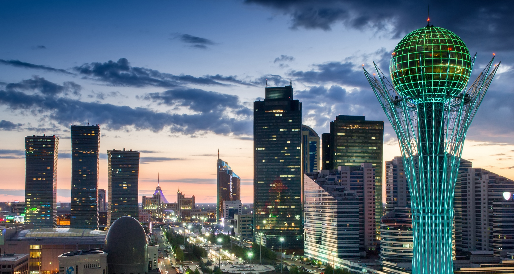

Tourism in Kazakhstan

- Charyn canyon
- Lake Kolsay
- Singing dune of the Altyn-Emel national park
- Natural treasure of Kazakhstan - Burabay
- Shakpak-ata - underground mosque in Mangistau region
Very close to Almaty, 200 kilometers east of the city, there is the Charyn Canyon, which is absolutely not inferior to the American Grand Canyon in beauty and natural wonders. Millions of years ago, this place was part of a gigantic ancient sea stretching from the modern Lake Alakol to the Caspian Sea.

Kolsai Lakes are one of the most beautiful places in the world. They are rightfully called the blue pearl of the Tien Shan. Translated from the Kazakh language "kolsay" means "lake in the gorge". All three reservoirs of the same name are located in the same picturesque Kolsai gorge in the eastern part of the Kungey-Alatau ridge, which is 300 kilometers from Almaty.

A 50-meter sand dune, lonely rising in the desert near the Ili River, is the pearl of the famous Kazakh Altyn-Emel nature reserve. The phenomenon of a dune in unusual sounds, which it makes when the wind gusts. Scientists explain her singing by the fact that in dry enough weather, when the sand slowly pours down, the grains of sand rub, as a result of which they vibrate and make sounds similar to an organ.

The national natural park is located in the north of Kazakhstan in the Akmola region, at a distance of about 255 kilometers from Nur-Sultan. The beauty of Burabay is not only a pine forest, but also picturesque mountains and lakes. There are 14 lakes in the park, among which the most famous are Borovoe, Bolshoye and Maloye Chebachye, Katarkol, Maybalyk. The highest point of the area is Mount Kokshetau. To the south is Mount Burabay (690 meters) - an excellent panoramic point. Further south are the Shchuchin hills, the largest of which is called Zheke-batyr. Mountain Okzhetpes and the stone island Zhumbaktas are a real decoration and visiting cards of Borovoe Lake.

Shakpak-ata is a unique architectural monument located in the northeastern part of the Tyub-Karagan peninsula in the Mangistau region, in the Shilikuduk tract. The mosque was carved out in the thickness of a rocky promontory formed by the channels of two ravines, descending along the slope of Mount Ungazy to one of the bays of the Caspian Sea. People come here from all over the country: some for tourist purposes, and some - to pray or be healed. According to local legends, a healer Shakpak-ata lived in a cave on the side of a mountain long ago. From all the surrounding territories, people came to him for the healing of soul and body. Centuries have passed, the elder is gone, but people still come to the cave so that the power of the ancient healer would help them. According to another legend, a great warrior lived in a cave. He was named Shakpak-ata (Old Man-Flint), since even in old age he did not lose his mighty strength.

Director of our company - Dilnaz Tilekqabylqyzy

If you want contact us, please click here